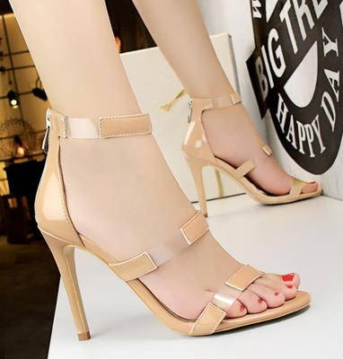
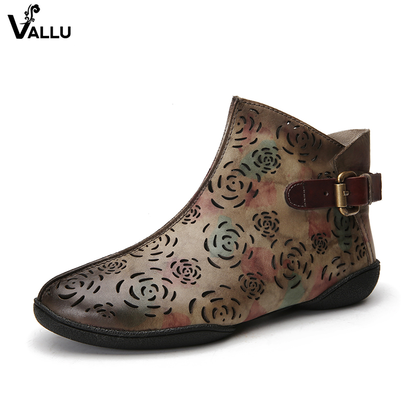
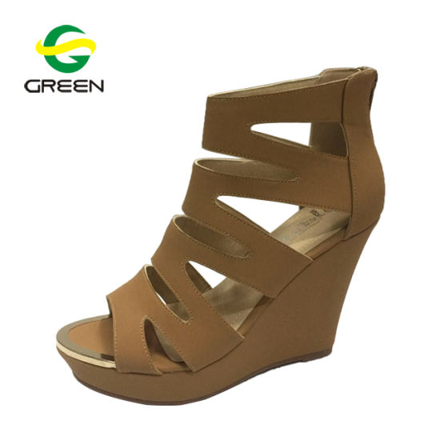

Compare the most helpful customer reviews of the best rated products
in our Women's Clothing store. These products are shortlisted based on
the overall star rating and the number of customer reviews received by
each product in the store, and are refreshed regularly.



Your spouse may have told you to change your shirt before work, but
does that kind of thing really matter in a business setting? Isn’t
your knowledge more influential than your appearance? In fact, your
appearance has a much greater influence on your customers than you
might realize. The first impression is everything, particularly where
customers are concerned. Your appearance has a strong effect on your
their subconscious, and the wrong appearance can easily make them feel
a little uneasy, hurting your business in the long run.
If you don’t believe it, consider a study featured on Psychology today
that analyzed the snap judgments of 300 men and women who were exposed
to different images of the same man and woman for three seconds at a
time. In one photo the man wore a tailor-made suit and in the others
he wore a similar suit with no tailoring. The woman appeared in one
photo in a fitted skirt suit, and in the others, she appeared in
various forms of less-fitting skirt and pants suits.
If you don’t believe it, consider a study featured on Psychology today
that analyzed the snap judgments of 300 men and women who were exposed
to different images of the same man and woman for three seconds at a
time. In one photo the man wore a tailor-made suit and in the others
he wore a similar suit with no tailoring. The woman appeared in one
photo in a fitted skirt suit, and in the others, she appeared in
various forms of less-fitting skirt and pants suits.
Considering the way you dress is perhaps most important when it comes
to dressing for your customers. Anytime you have a client meeting or
are presenting yourself in front of customers, your attire should be
professional. However, choosing a tailored suit isn’t the only thing
to consider when purchasing new clothing for the office. There are
several things that go into dressing for success in front of your
customers and clients.
.jpeg)
.jpeg)
.jpeg)
.jpeg)
.jpeg)